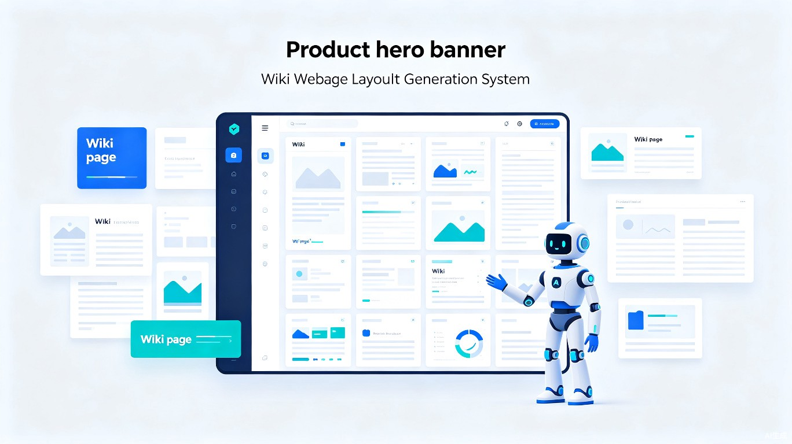
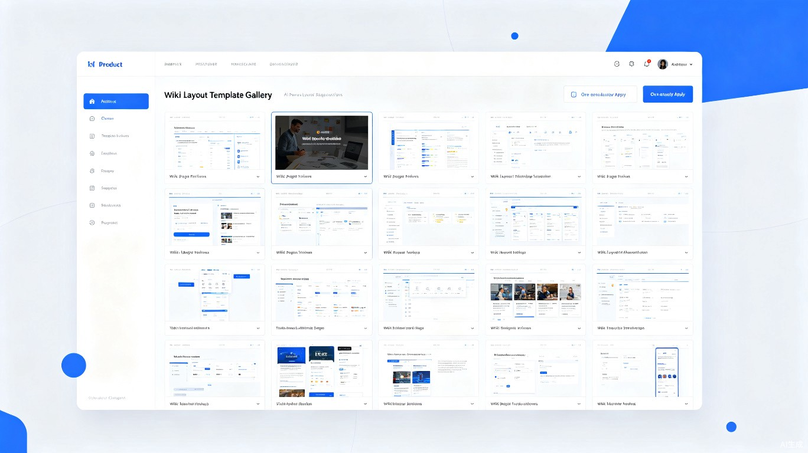

1创意名称与介绍
一款面向维基编辑者与知识管理团队的网页板式一站式生成系统，内置数十种经过精心设计的Wiki维基网站板式模板，结合 AI 智能体的自然语言交互能力，让用户在几分钟内完成从需求描述 → 板式推荐 → 内容填充 → 一键发布的全流程。
想解决什么问题
当前维基编辑者在创建或重构Wiki页面时，面临板式设计门槛高、模板分散难寻、排版效率低下的痛点——编辑者往往需要从零搭建页面框架，或在不同平台间反复搜索适配模板，大量时间被消耗在样式调试而非内容创作上。
为什么会想到做这个
灵感来源于真实的维基编辑社区反馈。许多活跃的维基贡献者在讨论区反复提到"不知道用什么板式来展示一类内容"、"好的排版模板太少且难以复用"。同时，随着 AI 代码生成工具（如 TRAE）的普及，我们意识到AI 智能体 + 模板库的组合可以彻底改变这一现状——让 AI 理解编辑者的内容意图，自动推荐并生成最匹配的网页板式。
大概是什么产品
这是一个基于Web的在线系统/平台，同时提供 API 接口供 AI 智能体调用，支持一键集成到现有的 Wiki 引擎（如 MediaWiki、Notion、语雀等）中，形成"人机协作"的板式构建工作流。

2目标用户及痛点
面向哪些用户
活跃于各类Wiki平台的贡献者，频繁创建和编辑词条页面，对排版美观度有要求但缺乏前端开发能力。
企业内部Wiki运维人员，需要为不同部门、不同类型的内容统一维护一套板式规范体系。
基于大模型构建Wiki自动生成Agent的开发者，需要可靠的板式生成后端来支撑前端交互。
在什么场景下使用
当前痛点
优质Wiki板式散落在GitHub、社区论坛、个人博客等各处，没有统一检索入口，找到合适的模板平均需要2小时以上的搜索与适配时间。
Wiki板式涉及HTML/CSS/模板语法等多层技术栈，非技术背景的编辑者难以自主定制，只能使用千篇一律的默认样式。
现有AI工具能生成文本内容，但产出的页面结构混乱、排版粗糙，缺乏专业Wiki页面应有的信息层级和视觉规范。
同一套内容在MediaWiki、Notion、语雀等不同平台间迁移时，板式无法复用，需要手动重新排版，工作量翻倍。
3价值与意义
效率提升价值
通过 AI 智能推荐 + 预置模板库的方案，WikiLayout AI 可将单次板式构建时间从2小时压缩至5分钟以内，效率提升达96%。同时，板式复用率从不足20%提升至80%以上，大幅减少重复劳动。
系统内置的智能匹配引擎能够分析编辑者输入的内容描述（如"这是一个人物传记页面"、"这是一个技术文档"），自动从模板库中推荐最匹配的3-5个板式方案，并支持实时预览与微调，真正做到"所想即所得"。
工作流概览
商业价值
面向个人编辑者提供免费基础版 + 高级模板订阅；面向企业团队提供私有化部署与定制板式服务，形成稳定经常性收入。
为 AI Agent 开发者提供板式生成 API，按调用量计费，嵌入各类知识管理工具生态，构建平台级影响力。
社会价值
WikiLayout AI 降低了Wiki编辑的技术参与门槛，让更多非技术背景的知识贡献者能够创建美观、规范的百科页面。这将促进知识民主化——每个拥有知识的人都能轻松地以专业的方式分享和传播知识，推动开放知识生态的繁荣发展。
尤其在教育领域，学生和教师可以利用该系统快速搭建课程Wiki、学习笔记库，让知识整理从"体力活"变为"创意活"，真正释放内容创作者的生产力。
4内置板式模板展示
系统预置多种经过社区验证的高质量Wiki板式模板，覆盖常见内容类型：
板式对比一览
| 板式类型 | 适用内容 | 核心组件 | AI推荐匹配度 |
|---|---|---|---|
| 人物传记 | 人物词条、作者介绍 | 信息卡片、时间线、作品列表 | ★★★★★ |
| 技术文档 | API文档、教程指南 | 代码块、参数表、目录树 | ★★★★★ |
| 事件时间线 | 历史事件、项目进度 | 时间轴、事件卡、引用块 | ★★★★☆ |
| 对比分析 | 产品对比、方案评估 | 对比表、评分图、优劣列表 | ★★★★☆ |
| 分类索引 | 主题门户、分类导航 | 分类网格、标签云、快速跳转 | ★★★★☆ |
| 学术条目 | 学术论文、研究综述 | 摘要区、引用文献、作者信息 | ★★★★★ |
模板库采用社区共建模式，优质编辑者可提交自定义板式并通过审核后上架，形成可持续增长的板式生态。AI 智能体会持续学习用户选择偏好，不断优化推荐准确率。